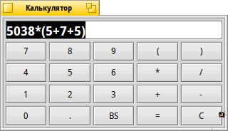

Калькулятор (DeskCalc)
Калькулятор (DeskCalc)
| Расположение в Deskbar: | ||
| Расположение в Tracker: | /boot/system/apps/DeskCalc | |
| Настройки хранятся по адресу: | ~/config/settings/DeskCalc_settings |
DeskCalc - простой калькулятор, который не лишен некоторых полезных функций, возможно неочевидных на первый взгляд.
DeskCalc понимает гораздо больше команд, чем позволяет ввести его скромная клавиатура.
Помимо операторов +, -, *, /, %, ^ и констант pi и e, поддерживаются следующие функции:
!, acos, asin, atan, atan2, cbrt, ceil, cos, cosh, exp, floor, log, log10, pow, sin, sinh, sqrt, tan, tanh.Меню по правому клику делает доступными следующие опции:
автоматически включает цифровую клавиатуру при запуске Калькулятора Переключение единиц измерения угла между радианами и градусами ("rad" и "deg"). ALT 0 Минимальный режим, в котором скрывается клавиатура. ALT 1 Стандартный вид Калькулятора. ALT 2 Показывает дополнительные кнопки для сложных вычислений. DeskCalc очень толерантен по отношению к вводу пользователя:
/, :, \ - интерпретируются как операторы деления.
*, x - символы умножения.
Также следует помнить, что . и , считаются знаками обозначения дробной части, и использовать их для выделения разрядов нельзя.Вы можете изменить размер калькулятора до нужного и расположить его в качестве репликанта, перетащив его на рабочий стол за символ в правом нижнем углу. Убедитесь, что активировано в настройках Deskbar.
Клавиатура может быть раскрашена перетаскиванием нужного цвета из любой программы, в которой есть палитра, например, из Икономатика.
Вы можете пролистывать историю ваших прошлых вычислений нажимая ↑ и ↓.
Вы можете выделить и перетащить методом drag&drop содержимое DeskCalc в любое приложение.
Что еще лучше, обратное действие так же возможно.
DeskCalc можно использовать и в Терминале. Просто заключите выражение в двойные кавычки, как показано здесь:
~> DeskCalc "sin(45)*(cos(12)+3.45)" 3.65365546732025461817951947270058
Примечание: При использовании в Терминале DeskCalc всегда будет использовать радианы в качестве единиц измерения угла для тригонометрических функций.